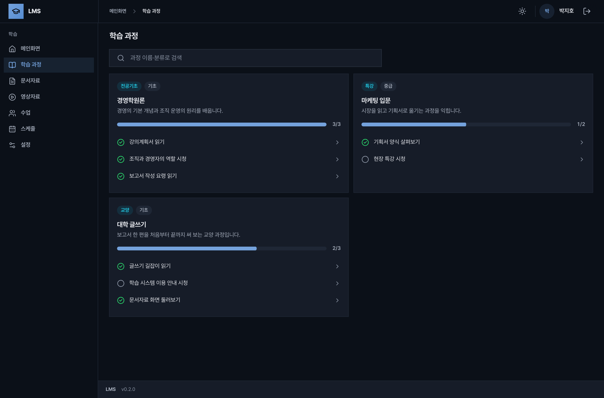
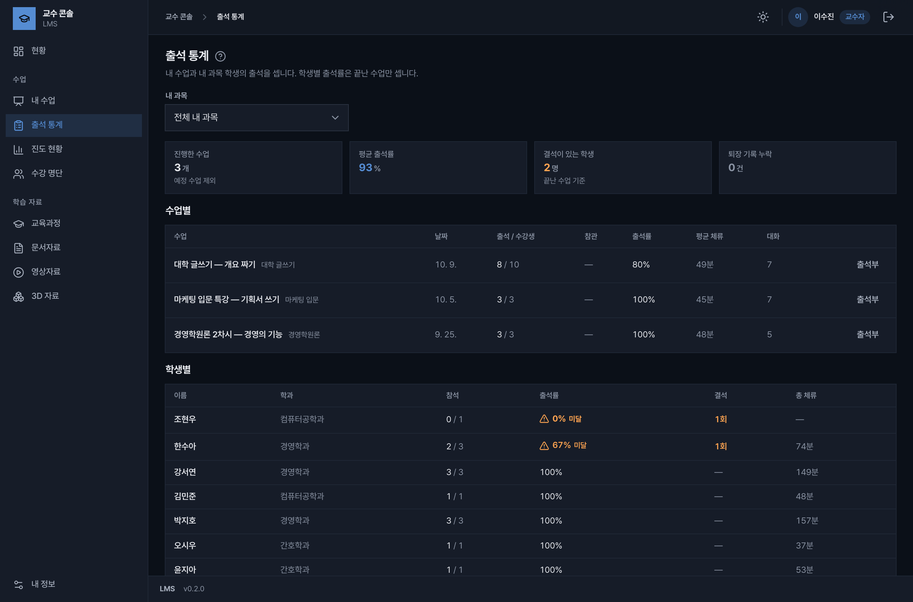
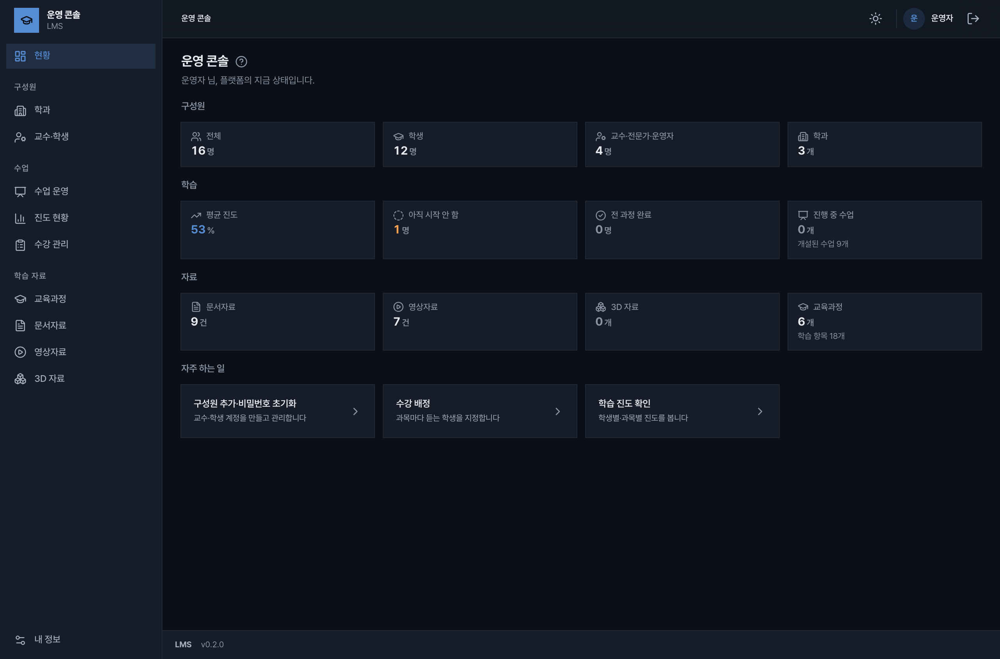
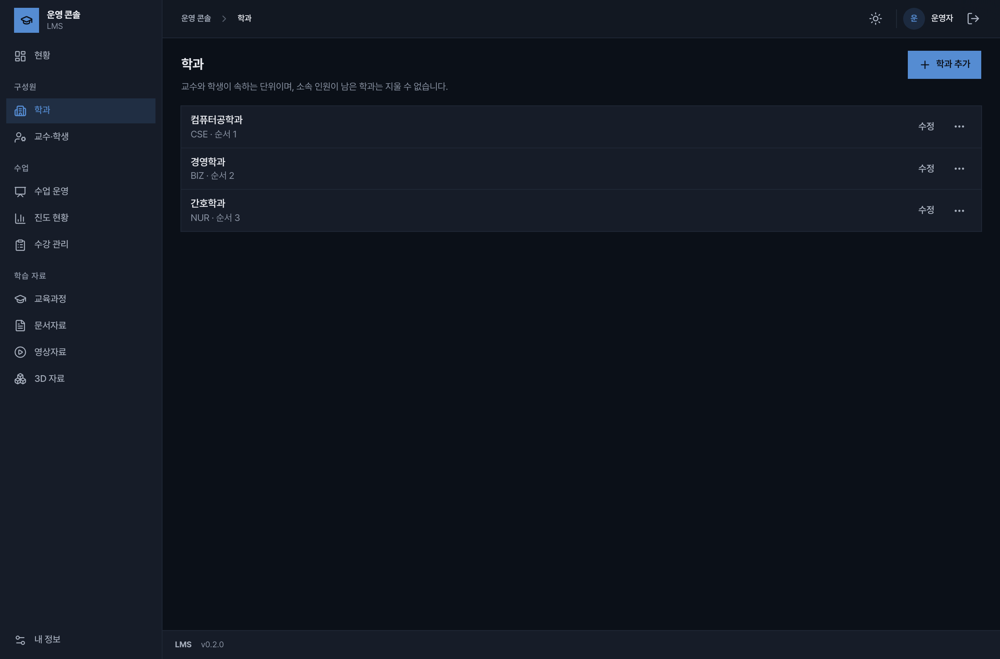
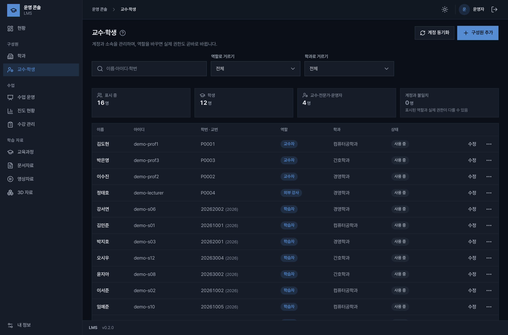
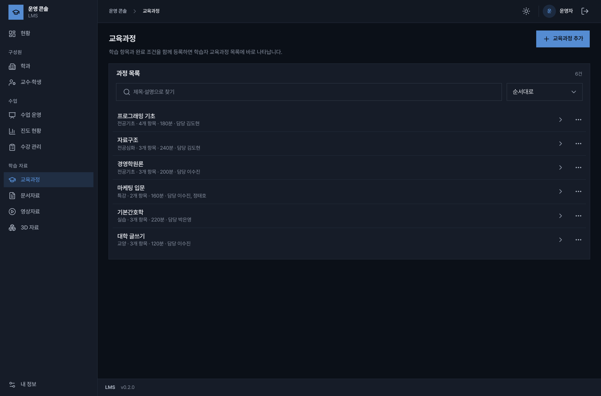
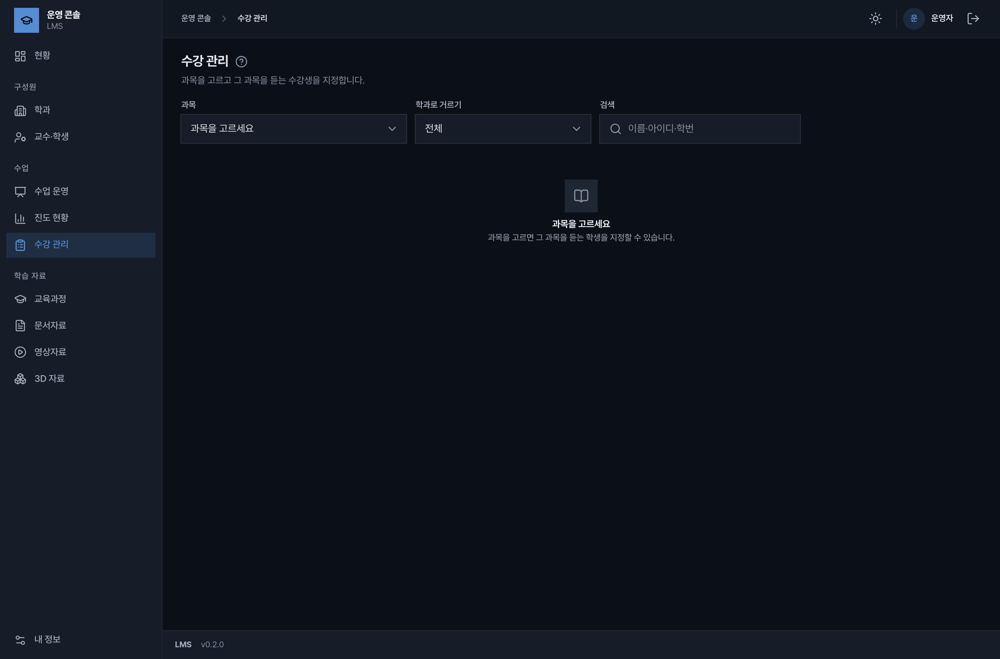
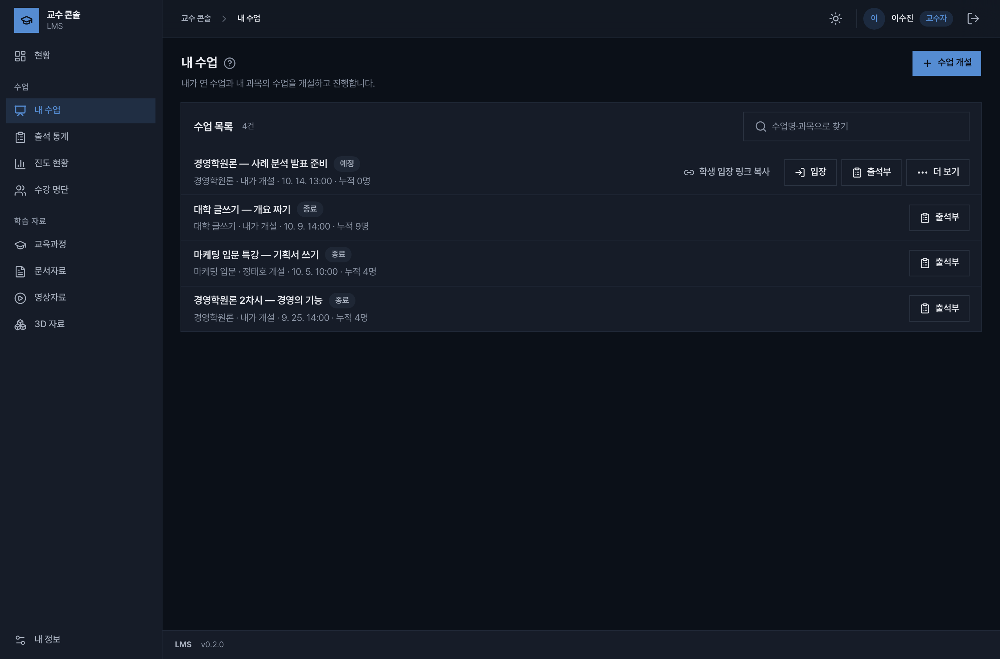
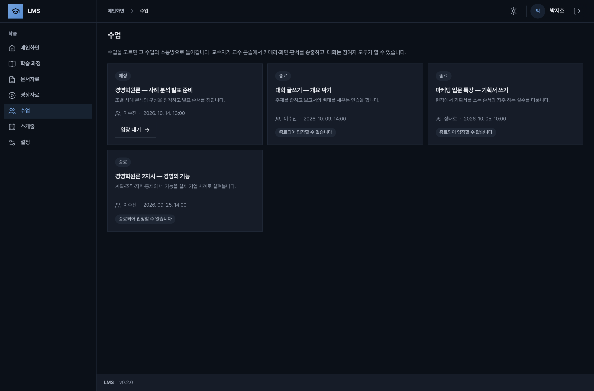
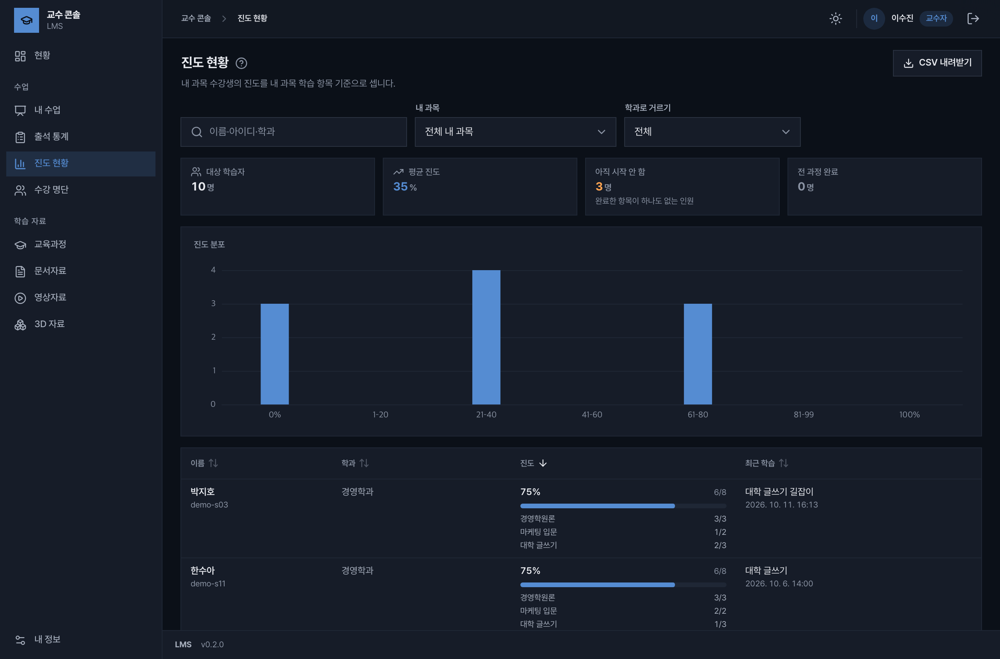

학생, 교수, 운영자가
각자의 화면으로 들어옵니다
세 앱은 주소가 따로 있고 역할에 따라 들어갈 수 있는 곳이 정해집니다. 아래 화면은 시연용 데이터로 찍은 실제 제품입니다.
학습자 앱
학생
- 수강 중인 과정의 문서와 영상을 순서대로 학습
- 과정별 진도와 남은 항목 확인
- 실시간 수업 입장과 수업 스케줄
- 공지사항

교수 콘솔
교수자 · 외부 강사
- 수업 개설과 진행, 학생 입장 링크
- 수업별 출석부와 학생별 출석 통계
- 과목별 진도 현황과 수강 명단
- 교육과정, 문서, 영상, 3D 자료 관리

운영 콘솔
학사 · 전산 담당자
- 학과와 교수·학생 계정, 역할 관리
- 과목별 수강 배정
- 전체 수업 운영과 진도 현황
- 구성원·학습·자료 현황판

설치한 날부터
첫 수업까지
운영자가 학교 구조와 계정을 만들고, 교수가 수업을 열고, 학생이 들어옵니다. 여덟 단계입니다.
운영자가 준비합니다
운영 콘솔-
1
처음 로그인
운영 콘솔을 열고 아이디
admin으로 로그인합니다. 초기 비밀번호는 설치할 때.env에 적은 값입니다.들어간 뒤 설정 화면에서 비밀번호를 먼저 바꿉니다.
IP 로 설치했을 때의 기본 주소는 다음과 같습니다. 포트는 바꿀 수 있습니다.
- 운영 콘솔
- https://서버IP:8082
- 교수 콘솔
- https://서버IP:8081
- 학습자 앱
- https://서버IP:8080
-
2
학과 만들기
학과 화면에서 학과 추가를 누릅니다. 학과는 교수와 학생이 속하는 단위이고, 뒤의 모든 목록을 학과별로 거를 때 씁니다.

-
3
교수·학생 계정 만들기
교수·학생 화면에서 구성원 추가로 계정을 만들고 역할과 학과를 정합니다.
역할을 바꾸면 들어갈 수 있는 앱도 바로 바뀝니다. 교수자와 외부 강사는 교수 콘솔로, 학습자는 학습자 앱으로 로그인합니다.

-
4
교육과정과 수강 배정
교육과정에서 과정을 추가하고 학습 항목(문서·영상)과 담당 교수를 정합니다. 등록하면 학습자 앱의 과정 목록에 바로 나타납니다.
수강 관리에서 과목을 고르고 그 과목을 듣는 학생을 지정합니다.


교수가 수업을 엽니다
교수 콘솔-
5
수업 개설
내 수업에서 수업 개설을 눌러 과목과 시작 시각을 정합니다.
만든 수업 옆의 학생 입장 링크 복사로 주소를 받아 학생에게 알리고, 시간이 되면 입장을 눌러 수업방으로 들어갑니다.

학생이 들어옵니다
학습자 앱-
6
수업 입장
학습자 앱의 수업 메뉴에 내가 듣는 수업이 예정·종료로 나뉘어 보입니다. 받은 링크나 이 목록에서 수업방으로 들어갑니다.
수업방에서는 교수의 카메라와 화면 공유, 3D 자료를 보고 채팅으로 대화합니다. 대화는 서버에 남아 다시 들어와도 이어서 보입니다.

-
7
과정 학습
학습 과정에서 수강 중인 과정의 문서와 영상을 순서대로 엽니다. 마친 항목에는 표시가 붙고 과정별 진도 막대가 채워집니다.
교수가 결과를 봅니다
교수 콘솔-
8
출석과 진도 확인
출석 통계에서 수업별 출석률과 학생별 결석을 보고, 수업마다 출석부를 엽니다.
진도 현황은 과목 수강생의 진도 분포와 학생별 진행 상황을 보여 주며 CSV 로 내려받을 수 있습니다.

들어 있는 기능
현재 버전(v0.2.0) 기준입니다.
실시간 수업
영상, 음성, 화면 공유와 채팅으로 수업을 진행합니다. 수업에 입장 비밀번호를 걸 수 있고, 3D 자료를 수업방에 띄워 함께 볼 수 있습니다.
학습 자료
문서, 영상, 3D 모델(GLB)을 올리고 분류합니다. 파일 하나의 상한은 300MB 입니다.
교육과정과 진도
과정에 학습 항목을 묶어 순서를 만들고, 학생별·과목별로 어디까지 마쳤는지 봅니다.
출석
수업마다 출석부가 남고, 학생별 출석률과 체류 시간, 결석 횟수를 통계로 봅니다.
구성원과 권한
운영자, 교수자, 외부 강사, 학습자 네 역할로 나눕니다. 역할이 없는 계정은 로그인되지 않습니다.
학과
구성원을 학과에 소속시키고 목록을 학과별로 걸러 봅니다.
설정 파일 하나, 명령 한 번
설정과 비밀값은 .env 한 파일에 모입니다. 설치 스크립트는 여러 번 돌려도 기존 계정과 데이터를 건드리지 않습니다.
# 1. 설정 파일을 만들고 서버 주소와 비밀번호를 적는다 $ cp .env.example .env # 2. 전체 스택 설치와 기동 $ ./scripts/install.sh # 평소 운영 $ ./scripts/backup.sh --keep 14 $ ./scripts/restore.sh backups/lms-backup-….tar $ ./scripts/update.sh
교내망 IP 로 설치
도메인 없이 서버 IP 로 엽니다. 사설 인증서로 HTTPS 를 쓰도록 구성합니다.
도메인 + HTTPS 로 설치
공인 도메인을 연결하면 프록시가 인증서를 받아 옵니다.
백업은 파일 하나
데이터베이스, 올린 파일, 설정, 인증서가 tar 한 묶음으로 나옵니다. 서비스를 멈추지 않고 받고, 새 서버로 옮길 때도 같은 묶음을 씁니다.
설치 뒤에는 인터넷 없이
설치할 때만 이미지와 패키지를 받습니다. 그 뒤로는 외부 연결 없이 동작합니다(도메인 설치의 인증서 갱신 제외).
준비할 서버
Docker 가 도는 64비트 Linux 서버 한 대면 됩니다.
| 항목 | 최소 | 권장 |
|---|---|---|
| CPU | 4 코어 | 8 코어 |
| 메모리 | 8 GB | 16 GB |
| 디스크 | 40 GB + 영상 용량 | SSD 200 GB 이상 |
| 운영체제 | Ubuntu 22.04 / 24.04 LTS 권장 (x86_64 · arm64) | |
| 소프트웨어 | Docker Engine 24 이상, Docker Compose 2.20 이상 | |
- 방화벽실시간 수업은 영상·음성용 UDP 포트를 서버 방화벽과 학교 방화벽에서 열어야 합니다. 포트 목록은 설치 안내서에 있습니다.
- 데이터 위치데이터베이스와 파일 저장소는 서버 안에서만 통신하고 밖으로 열리지 않습니다.
도입을 검토 중이신가요
학교 규모와 설치 환경을 알려 주시면 시연과 설치 안내서를 보내 드립니다.